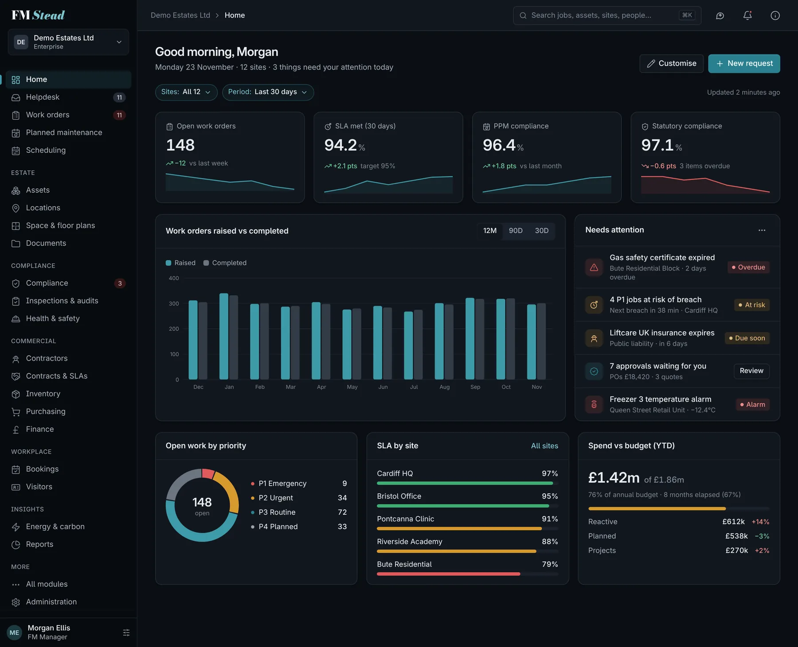
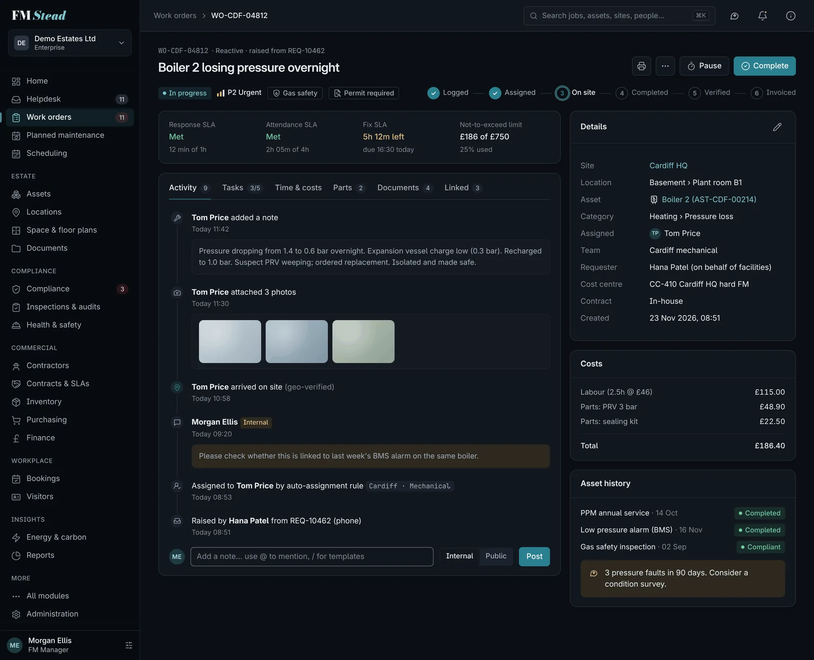
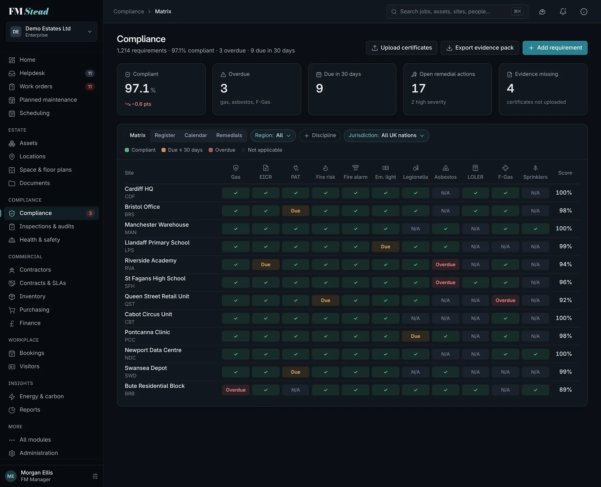
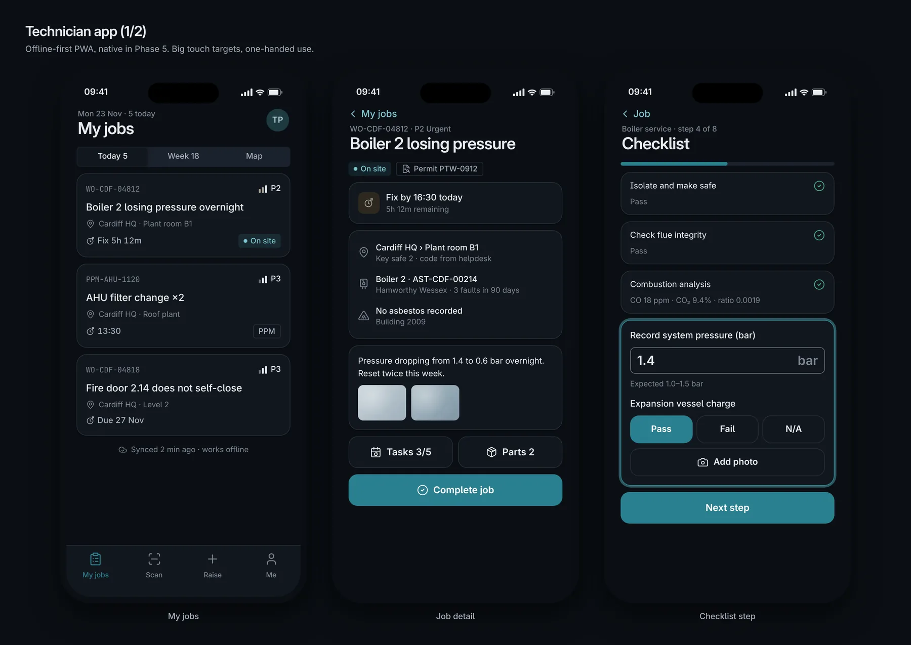

Everything in one clear view.
From the morning overview to a single job on an engineer's phone, every screen works from the same live record.




Design screens, shown with demo data.
Made for UK estates and FM teams.
FM service providers
Run many clients from one platform, with per-client SLAs, branding and reporting.
Education
Multi-academy trusts, schools and colleges looking after many sites with small teams.
Commercial property
Managing agents handling tenants, lease dates, service charges and contractors.
Housing associations
Repairs, voids and statutory compliance in one place, ready for regulator scrutiny.
Healthcare and hospitality
Reactive maintenance and compliance across clinics, shops and venues in many locations.
What sets it apart.
Breadth without the weight
One login covers helpdesk, maintenance, compliance, space and finance. Modules switch on as your plan grows.
Yours to configure
Fields, forms, workflows, SLAs and roles are changed in the app by your own administrators, not by consultants.
UK compliance built in
Statutory templates, certificates and remedial actions are tracked in one register, with an audit trail.
Works offline in the field
Engineers and contractors keep working without a signal, and their updates sync when they are back online.
Ready in days
Importers, templates and demo data get a team started quickly.